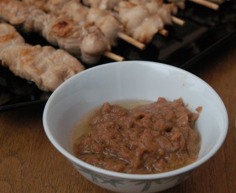

| Zutaten für 3dl: | |
| 1 El | Erdnussöl |
| 2 | Schalotten |
| 1 | Knoblauchzehe |
| 2 dl | Kokosmilch |
| 80 g | gesalzene Erdnüsse, gemahlen |
| 1.5 El | helle (light) Sojasauce |
| 1 El | Tamarindenpaste (in asiatischen Spezialitätenläden erhältlich) |
| 1 El | Rohzucker |
| 1.5 | kleine rote Chilis |
Zubereitungszeit ca. 20 Minuten
Schalotten fein hacken.
Knoblauch schälen.
Öl warm werden lassen. Schalotten und gepressten Knoblauch andämpfen.
Kokosmilch dazugiessen, aufkochen und Hitze reduzieren.
Erdnüsse und alle Zutaten bis und mit Chilis beigeben. Sauce ca. 10 Minuten köcheln.
Passt am Besten zu: Poulet-Satay
Pro Person: 22g Fett, 7g Eiweiss, 9g Kohlenhydrate, 1081 kJ, 258 kcal
Betty Bossi Zeitung, 02, 2005 Seite 11
Hat Anfang August 2008 ausgezeichnet geschmeckt. RE
@LINKBACK_TAG@ @WAKELOCK@